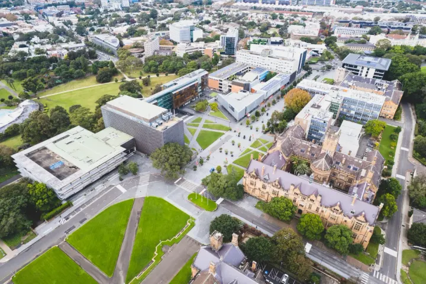
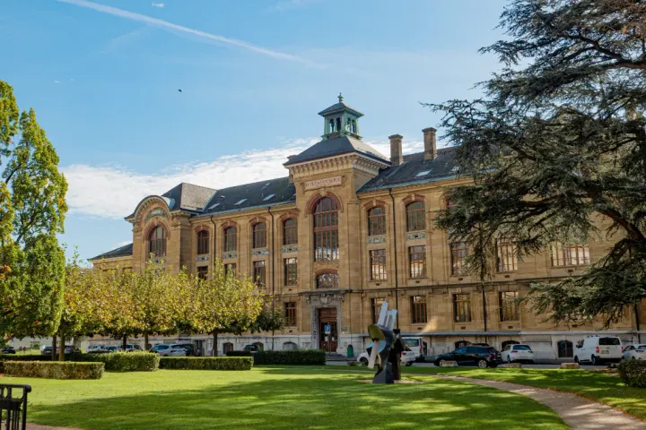
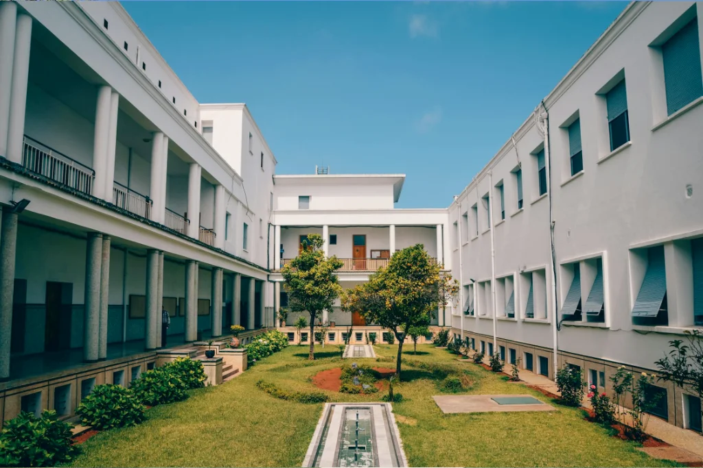
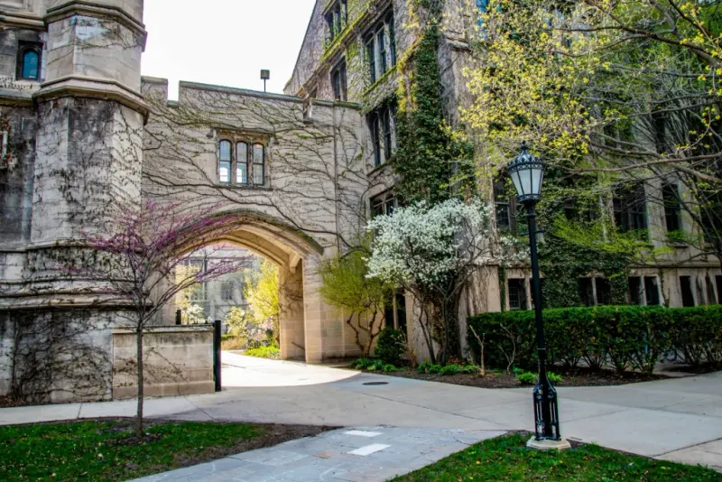
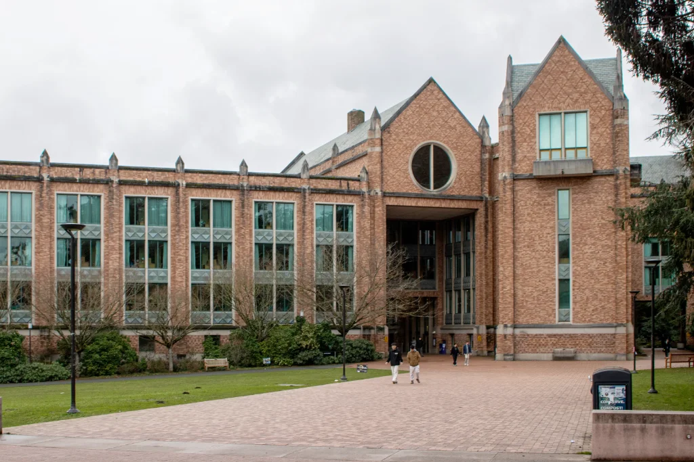

Direktori Kampus
Eksplorasi Perguruan Tinggi Ternama
Profil lengkap universitas negeri dan swasta unggulan di Indonesia untuk memandu masa depan studimu
Gerbang Menuju Kampus Impianmu di Seluruh Nusantara
Portal Kampus (UniPulse) menyajikan kompilasi data komprehensif perguruan tinggi terakreditasi Unggul di Indonesia. Temukan informasi akreditasi institusi, fakultas favorit, fasilitas ikonik, dan jalur seleksi penerimaan mahasiswa baru.
+
Kampus Terakreditasi Unggul
Fakultas & Program Studi
%
Jalur Masuk Nasional
:1
Skema Beasiswa Tersedia
Daftar Universitas Unggulan
Pilih kategori perguruan tinggi negeri, institut teknologi, atau swasta terkemuka
- Semua Kampus
- PTN Unggulan
- Institut Teknologi
- PTS Ternama

PTN UnggulanUniversitas Indonesia (UI)
Kampus terkemuka di Depok dan Salemba dengan 14 fakultas, fasilitas riset internasional, dan jaringan alumni global.
- Depok & Jakarta
- Akreditasi Unggul

Institut TeknologiInstitut Teknologi Bandung (ITB)
Pusat keunggulan sains, rekayasa teknologi, dan seni desain di Indonesia dengan reputasi riset berkelas dunia.
- Bandung, Jawa Barat
- Akreditasi Unggul

PTN UnggulanUniversitas Gadjah Mada (UGM)
Universitas kerakyatan terdepan dengan 18 fakultas komprehensif, riset sosio-humaniora, dan pengabdian masyarakat.
- Yogyakarta, DIY
- Akreditasi Unggul

Institut TeknologiInstitut Teknologi Sepuluh Nopember (ITS)
Pusat inovasi teknologi maritim, robotika terapan, otomotif ramah lingkungan, dan sains kecerdasan buatan.
- Surabaya, Jawa Timur
- Akreditasi Unggul
 PTN Unggulan
PTN Unggulan
Universitas Airlangga (UNAIR)
Pusat rujukan riset kedokteran, farmasi, sains hayati, serta hukum dan ilmu sosial di Jawa Timur.
- Surabaya, Jawa Timur
- Akreditasi Unggul
 PTS Ternama
PTS Ternama
Telkom University (Tel-U)
Perguruan tinggi swasta berbasis teknologi informasi dan komunikasi (ICT) terbaik di Indonesia.
- Bandung, Jawa Barat
- Akreditasi Unggul

PTS TernamaUniversitas Bina Nusantara (BINUS)
Perguruan tinggi swasta unggulan berfokus pada inovasi kewirausahaan, sistem komputer, dan industri kreatif.
- Jakarta & Multi-Kota
- Akreditasi Unggul
 PTN Unggulan
PTN Unggulan
Universitas Diponegoro (UNDIP)
Perguruan tinggi terkemuka dengan keunggulan riset wilayah pesisir tropis, ilmu hukum, dan teknik.
- Semarang, Jawa Tengah
- Akreditasi Unggul
 PTN Unggulan
PTN Unggulan
IPB University (Institut Pertanian Bogor)
Pelopor riset biosains termaju, agromaritim cerdas 4.0, bioteknologi, dan keberlanjutan pangan nusantara.
- Bogor, Jawa Barat
- Akreditasi Unggul